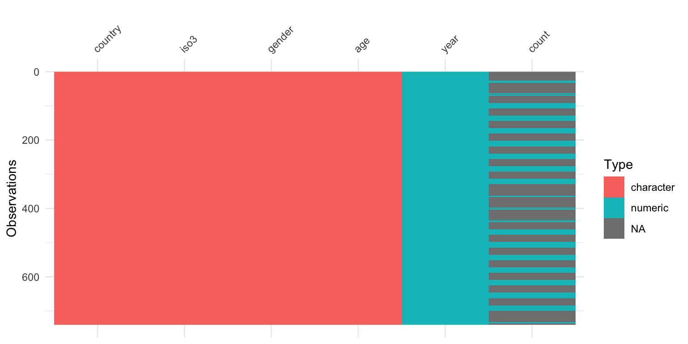

Chapter 6 Handling Missings
6.1 Overview
- The story of missing flights
- Data set overviews
- Missingness patterns
- Common ways to impute
- Checking imputed values
6.2 A story of missing flights
Do you know what a ghost flight is?
When we were were first analysing the US airline traffic data, we found that it quite often occurred that a plane (identified by its tail number) landed at one airport but took off from another airport, e.g.
Year Month DayofMonth DepTime ArrTime Origin Dest Diverted
1995 3 8 1102 1256 PIT CVG 0
1995 3 8 1311 NA CVG PIT 1
1995 3 8 1913 2050 RIC PIT 0
1995 3 8 2134 2300 PIT MSY 0 The plane landed in Pittsburgh but took off in Richmond.
This happens when a plane is needed at a location where there’s a shortage. A plane flies empty and it doesn’t get listed in the database. When it happens a lot, it indicates that the company is operating inefficiently.
An example was AirTran in March 2003. 46 flights, for a total of 31510 miles.
Airtran repeatedly had financial difficulties in the following years, and finally ceased operations in 2014.
Missing values are not always obvious in data.
6.3 Data set overview
library(tidyverse)
library(visdat)
library(naniar)
tb <- read_csv("data/TB_notifications_2018-03-18.csv") %>%
select(country, iso3, year, new_sp_m04:new_sp_fu) %>%
gather(stuff, count, new_sp_m04:new_sp_fu) %>%
separate(stuff, c("stuff1", "stuff2", "genderage")) %>%
select(-stuff1, -stuff2) %>%
mutate(gender=substr(genderage, 1, 1),
age=substr(genderage, 2, length(genderage))) %>%
select(-genderage)
tb_au <- tb %>%
filter(country == "Australia")
vis_dat(tb_au)
Overview of the tb incidence in Australia.
This type of display is called a “heatmap”, displays the data table, with cells coloured according to some other information. In this case it is type of variable, and missingness status. What do we learn?
- Most of the variables are
character(text) variables, orintegervariables. - Missing values are located only in the counts, but it is in blocks, so perhaps corresponds to some category levels of the other variables.
6.4 Missing value patterns
West Pacific Tropical Atmosphere Ocean Data, 1993 & 1997, for improved detection, understanding and prediction of El Nino and La Nina, collected from http://www.pmel.noaa.gov/tao/index.shtml
glimpse(oceanbuoys)
Rows: 736
Columns: 8
$ year <dbl> 1997, 1997, 1997, 1997, 1997, 1997, 1997, 1997, 1997, 1997,…
$ latitude <dbl> 0, 0, 0, 0, 0, 0, 0, 0, 0, 0, 0, 0, 0, 0, 0, 0, 0, 0, 0, 0,…
$ longitude <dbl> -110, -110, -110, -110, -110, -110, -110, -110, -110, -110,…
$ sea_temp_c <dbl> 27.59, 27.55, 27.57, 27.62, 27.65, 27.83, 28.01, 28.04, 28.…
$ air_temp_c <dbl> 27.15, 27.02, 27.00, 26.93, 26.84, 26.94, 27.04, 27.11, 27.…
$ humidity <dbl> 79.6, 75.8, 76.5, 76.2, 76.4, 76.7, 76.5, 78.3, 78.6, 76.9,…
$ wind_ew <dbl> -6.4, -5.3, -5.1, -4.9, -3.5, -4.4, -2.0, -3.7, -4.2, -3.6,…
$ wind_ns <dbl> 5.4, 5.3, 4.5, 2.5, 4.1, 1.6, 3.5, 4.5, 5.0, 3.5, 2.9, 1.8,…The data has 736 observations, and 8 variables. All of the variables are numeric (including year).
6.4.1 Missingness map
vis_miss(oceanbuoys, sort_miss=TRUE) + theme(aspect.ratio=1)What do we learn?
- Two variables, air temperature and humidity, have a large number of missings.
- Year, latitude and longitude have no missings
- Sea temperature has a couple of missings
- Some rows have a lot of missings
Overall statistics, 3% of possible values are missing. That’s not much. BUT, both air temperature and humidity have more than 10% missing which is too much to ignore.
6.4.2 Numerical summaries
- Proportion of observations missing:
s_miss <- miss_summary(oceanbuoys)
s_miss$miss_df_prop
[1] 0.03006114- Proportion of variables missing:
s_miss$miss_var_prop
[1] 0.375- How many observations have \(k\) missings?
s_miss$miss_case_table
[[1]]
# A tibble: 4 × 3
n_miss_in_case n_cases pct_cases
<int> <int> <dbl>
1 0 565 76.8
2 1 167 22.7
3 2 2 0.272
4 3 2 0.272- By group
s_miss_group <- oceanbuoys %>%
group_by(year) %>% miss_summary()
s_miss_group$miss_case_table
[[1]]
# A tibble: 6 × 4
# Groups: year [2]
year n_miss_in_case n_cases pct_cases
<dbl> <int> <int> <dbl>
1 1997 0 291 79.1
2 1997 1 77 20.9
3 1993 0 274 74.5
4 1993 1 90 24.5
5 1993 2 2 0.543
6 1993 3 2 0.543You can call these separately with:
prop_miss- The proportion of missingsmiss_var_prop- The proportion of variables with a missingmiss_case_table- The proportion of cases with \(k\) missings
6.4.3 Tend to get ignored by most software
and this is a problem, because results computed on data with missing values might be biased. for example, ggplot ignores them, but at least tells you its ignoring them:
ggplot(oceanbuoys,
aes(x = sea_temp_c,
y = humidity)) +
geom_point() + theme(aspect.ratio=1)
Warning: Removed 94 rows containing missing values (`geom_point()`).6.4.4 Add them to plot
ggplot(oceanbuoys,
aes(x = sea_temp_c,
y = humidity)) +
scale_colour_brewer(palette="Dark2") +
geom_miss_point() + theme(aspect.ratio=1)By year
ggplot(oceanbuoys,
aes(x = sea_temp_c,
y = humidity)) +
geom_miss_point() +
scale_colour_brewer(palette="Dark2") +
facet_wrap(~year) +
theme(aspect.ratio=1) 6.4.5 Understanding missing dependencies
ggplot(oceanbuoys,
aes(x = sea_temp_c,
y = air_temp_c)) +
geom_miss_point() +
scale_colour_brewer(palette="Dark2") +
facet_wrap(~year) +
theme(aspect.ratio=1)What do we learn?
- There is a different missingness pattern in each of the years
- Year needs to be accounted for in finding good substitute values.
6.5 Shadow matrix
The shadow table is created to mark the location of missings in the original data table. Here, this gets appended to the original data, and then can be used to submet, or colour by different types of missingness.
as_shadow(oceanbuoys)
# A tibble: 736 × 8
year_NA latitude_NA longitude_NA sea_temp_c_NA air_temp_c_NA humidity_NA
<fct> <fct> <fct> <fct> <fct> <fct>
1 !NA !NA !NA !NA !NA !NA
2 !NA !NA !NA !NA !NA !NA
3 !NA !NA !NA !NA !NA !NA
4 !NA !NA !NA !NA !NA !NA
5 !NA !NA !NA !NA !NA !NA
6 !NA !NA !NA !NA !NA !NA
7 !NA !NA !NA !NA !NA !NA
8 !NA !NA !NA !NA !NA !NA
9 !NA !NA !NA !NA !NA !NA
10 !NA !NA !NA !NA !NA !NA
# ℹ 726 more rows
# ℹ 2 more variables: wind_ew_NA <fct>, wind_ns_NA <fct>
tao_shadow <- bind_shadow(oceanbuoys)
tao_shadow
# A tibble: 736 × 16
year latitude longitude sea_temp_c air_temp_c humidity wind_ew wind_ns
<dbl> <dbl> <dbl> <dbl> <dbl> <dbl> <dbl> <dbl>
1 1997 0 -110 27.6 27.1 79.6 -6.40 5.40
2 1997 0 -110 27.5 27.0 75.8 -5.30 5.30
3 1997 0 -110 27.6 27 76.5 -5.10 4.5
4 1997 0 -110 27.6 26.9 76.2 -4.90 2.5
5 1997 0 -110 27.6 26.8 76.4 -3.5 4.10
6 1997 0 -110 27.8 26.9 76.7 -4.40 1.60
7 1997 0 -110 28.0 27.0 76.5 -2 3.5
8 1997 0 -110 28.0 27.1 78.3 -3.70 4.5
9 1997 0 -110 28.0 27.2 78.6 -4.20 5
10 1997 0 -110 28.0 27.2 76.9 -3.60 3.5
# ℹ 726 more rows
# ℹ 8 more variables: year_NA <fct>, latitude_NA <fct>, longitude_NA <fct>,
# sea_temp_c_NA <fct>, air_temp_c_NA <fct>, humidity_NA <fct>,
# wind_ew_NA <fct>, wind_ns_NA <fct>
glimpse(tao_shadow)
Rows: 736
Columns: 16
$ year <dbl> 1997, 1997, 1997, 1997, 1997, 1997, 1997, 1997, 1997, 19…
$ latitude <dbl> 0, 0, 0, 0, 0, 0, 0, 0, 0, 0, 0, 0, 0, 0, 0, 0, 0, 0, 0,…
$ longitude <dbl> -110, -110, -110, -110, -110, -110, -110, -110, -110, -1…
$ sea_temp_c <dbl> 27.59, 27.55, 27.57, 27.62, 27.65, 27.83, 28.01, 28.04, …
$ air_temp_c <dbl> 27.15, 27.02, 27.00, 26.93, 26.84, 26.94, 27.04, 27.11, …
$ humidity <dbl> 79.6, 75.8, 76.5, 76.2, 76.4, 76.7, 76.5, 78.3, 78.6, 76…
$ wind_ew <dbl> -6.4, -5.3, -5.1, -4.9, -3.5, -4.4, -2.0, -3.7, -4.2, -3…
$ wind_ns <dbl> 5.4, 5.3, 4.5, 2.5, 4.1, 1.6, 3.5, 4.5, 5.0, 3.5, 2.9, 1…
$ year_NA <fct> !NA, !NA, !NA, !NA, !NA, !NA, !NA, !NA, !NA, !NA, !NA, !…
$ latitude_NA <fct> !NA, !NA, !NA, !NA, !NA, !NA, !NA, !NA, !NA, !NA, !NA, !…
$ longitude_NA <fct> !NA, !NA, !NA, !NA, !NA, !NA, !NA, !NA, !NA, !NA, !NA, !…
$ sea_temp_c_NA <fct> !NA, !NA, !NA, !NA, !NA, !NA, !NA, !NA, !NA, !NA, !NA, !…
$ air_temp_c_NA <fct> !NA, !NA, !NA, !NA, !NA, !NA, !NA, !NA, !NA, !NA, !NA, !…
$ humidity_NA <fct> !NA, !NA, !NA, !NA, !NA, !NA, !NA, !NA, !NA, !NA, !NA, !…
$ wind_ew_NA <fct> !NA, !NA, !NA, !NA, !NA, !NA, !NA, !NA, !NA, !NA, !NA, !…
$ wind_ns_NA <fct> !NA, !NA, !NA, !NA, !NA, !NA, !NA, !NA, !NA, !NA, !NA, !…6.5.1 Relationship with other variables
ggplot(data = tao_shadow,
aes(x = wind_ew,
y=wind_ns,
colour=air_temp_c_NA)) +
scale_colour_brewer(palette="Dark2") +
geom_point(alpha=0.7) + theme(aspect.ratio=1) What do we learn?
- The lowest values of east-west winds have no missing values. Maybe it is less likely to have air temperature missing values when there are light east-west winds?
6.6 Strategy
- An small fraction of cases have several missings, drop the cases
- A variable or two, out of many, have a lot of missings, drop the variables
- If missings are small in number, but located in many cases and variables, you need to impute these values, to do most analyses
- Designing the imputation should take into account dependencies that you have seen between missingness and existing variables.
- For the ocean buoys data this means imputation needs to be done separately by year
6.7 Common ways to impute values
- Simple parametric: use the mean or median of the complete cases for each variable
- Simple non-parametric: find the \(k\) nearest neighbours with a complete value and average these
- Multiple imputation: Use a statistical distribution, e.g. normal model and simulate a value (or set of values, hot deck imputation) for the missings
6.7.1 Mean
ignoring year.
tao_shadow <- tao_shadow %>%
impute_mean_at(vars(sea_temp_c,
air_temp_c))
ggplot(tao_shadow,
aes(x = sea_temp_c,
y = air_temp_c,
colour = air_temp_c_NA)) +
geom_point(alpha = 0.7) +
facet_wrap(~year) +
scale_colour_brewer(palette = "Dark2") +
theme(aspect.ratio = 1)
What do we learn?
- Oh, this is so wrong!
- The imputed values are nothing like the complete case values
6.7.2 by year
tao_shadow <- bind_shadow(oceanbuoys)
tao_shadow <- tao_shadow %>%
group_by(year) %>%
impute_mean_at(vars(sea_temp_c,
air_temp_c))
ggplot(tao_shadow,
aes(x = sea_temp_c,
y = air_temp_c,
colour=air_temp_c_NA)) +
geom_point(alpha=0.7) +
facet_wrap(~year) +
scale_colour_brewer(palette="Dark2") +
theme(aspect.ratio=1)What do we learn?
- The imputed values are closer to the complete case values
- However, they form a rigid line, mismatching the variation
- and they extend outside the range of complete values. This is a problem in that the imputed air temperature value for these high sea temperature cases is lower than we would expect, and thus possibly impeding good model fitting
6.7.3 Two minute challenge
- Change the code to plot sea temperature against humidity, with colour representing missing humidity values. What do you learn about the imputations?
tao_shadow <- bind_shadow(oceanbuoys)
tao_shadow <- tao_shadow %>%
group_by(year) %>%
impute_mean_at(vars(sea_temp_c,
air_temp_c,
humidity))
ggplot(tao_shadow,
aes(x = sea_temp_c,
y = humidity,
colour=humidity_NA)) +
geom_point(alpha=0.7) +
facet_wrap(~year) +
scale_colour_brewer(palette="Dark2") +
theme(aspect.ratio=1)
6.7.4 Nearest neighbors imputation
The package impute from Bioconductor has a nice nearest neighbor imputation implementation.
#source("https://bioconductor.org/biocLite.R")
#biocLite("impute")
library(impute)
tao_impute <- bind_shadow(oceanbuoys) %>%
arrange(year, sea_temp_c, air_temp_c) %>%
select(sea_temp_c, air_temp_c)
tao_impute <- impute.knn(as.matrix(tao_impute), 5)
tao_shadow <- bind_shadow(oceanbuoys) %>%
arrange(year, sea_temp_c, air_temp_c) %>%
mutate(sea_temp_c = tao_impute$data[,1],
air_temp_c = tao_impute$data[,2])
ggplot(tao_shadow,
aes(x = sea_temp_c,
y = air_temp_c,
colour=air_temp_c_NA)) +
geom_point(alpha=0.7) +
facet_wrap(~year) +
scale_colour_brewer(palette="Dark2") +
theme(aspect.ratio=1)6.7.5 by year
library(impute)
tao_impute_93 <- bind_shadow(oceanbuoys) %>%
arrange(year, sea_temp_c, air_temp_c) %>%
filter(year=="1993") %>%
select(sea_temp_c, air_temp_c)
tao_impute_93 <- impute.knn(as.matrix(tao_impute_93), 5)
tao_impute_97 <- bind_shadow(oceanbuoys) %>%
arrange(year, sea_temp_c, air_temp_c) %>%
filter(year=="1997") %>%
select(sea_temp_c, air_temp_c)
tao_impute_97 <- impute.knn(as.matrix(tao_impute_97), 5)
tao_impute <- rbind(tao_impute_93$data, tao_impute_97$data)
tao_shadow <- bind_shadow(oceanbuoys) %>%
arrange(year, sea_temp_c, air_temp_c) %>%
mutate(sea_temp_c = tao_impute[,1],
air_temp_c = tao_impute[,2])
ggplot(tao_shadow,
aes(x = sea_temp_c,
y = air_temp_c,
colour=air_temp_c_NA)) +
geom_point(alpha=0.5) +
facet_wrap(~year) +
scale_colour_brewer(palette="Dark2") +
theme(aspect.ratio=1)6.8 Exercise
We are going to examine Melbourne house prices, using a data set available at https://www.kaggle.com/anthonypino/melbourne-housing-market). It was constructed by scraping the auction reports over several years, and adding more information on property details by scraping the web pages on the properties at domain.com.
- Make an overview plot of the full data. Which variables have missings?
- Focus ONLY on the variables Price, Rooms, Type, Distance, Bedroom2, Bathroom. Remove the observations that have missing values on Price, because this is the response variable that we want to ultimately predict. We can’t build a stable model for price if we don’t know the price.
- Make a missing values summary of all the data - what proportion of observations are missing on Price?
- Make the shadow matrix, and plot Bathroom vs Bedroom2 coloured by missingness on Bedroom2. Why don’t any missing values show up?
- Impute the missing values for Bedroom2 and Bathroom, by using mean imputation. Make a plot of the two variables, with the imputed values coloured. Describe the pattern that you see.
- Impute the missing values for Bedroom2 and Bathroom, using a linear model on th variable Rooms. Make a plot of the two variables, with the imputed values coloured. Is this better or worse than the mean value imputed values? Explain your thinking. (You can use the code below to help do this type of imputation. )
houses_sub <- houses %>% select(Price, Rooms, Type, Distance, Bedroom2, Bathroom)
houses_sub <- houses_sub %>% bind_shadow()
br2 <- lm(Bedroom2~Rooms, data=houses_sub)
ba <- lm(Bathroom~Rooms, data=houses_sub)
houses_sub <- houses_sub %>%
mutate(Bedroom2=ifelse(is.na(Bedroom2), predict(br2, new=houses_sub), Bedroom2),
Bathroom=ifelse(is.na(Bathroom), predict(br2, new=houses_sub), Bathroom))
ggplot(houses_sub, aes(x=Bedroom2, y=Bathroom,
colour=Bedroom2_NA)) +
geom_point(alpha=0.2)